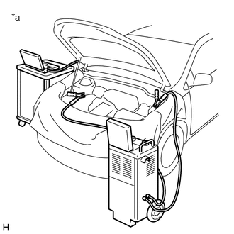
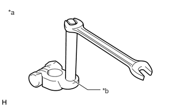
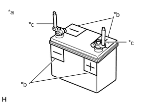
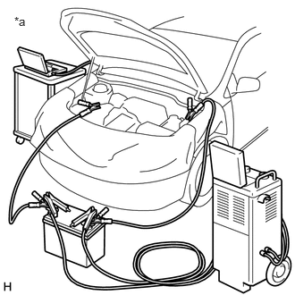

| Last Modified: 10-07-2025 | 6.11:8.1.0 | Doc ID: RM100000002HFV2 |
| Model Year Start: 2024 | Model: Tacoma | Prod Date Range: [12/2023 - ] |
| Title: SETUP: WHEN REPLACING OR REMOVING/INSTALLING PARTS: ECU CONFIGURATION; 2024 - 2026 MY Tacoma Tacoma HV [12/2023 - ] | ||
ECU CONFIGURATION
STABILIZE A POWER SOURCE ON THE VEHICLE SIDE
Shut off as many following systems and parts as possible since they would generate an electrical load.
CAUTION:
If vehicle systems affect a voltage to reduce during reprogramming, it may disable the ECU in reprogramming, which concludes an ECU replacement.
(a) Turn off all systems that add electrical load.
HINT:
- Exterior lighting systems
- Interior lighting systems (Make them unlit even when a door is open)
- Air conditioning system
- Audio/Navigation systems
- Seat belt warning system (Lock belt buckles by inserting tongue plates)
- Accessory parts of aftermarket installation
- Other, generic electrical parts (such as remote engine starter, security system)
(b) Remove the fuse or relay for the electric fan.
INSPECT THE BATTERY OF THE VEHICLE. (CHECK IF IT HAS 11.8 V MIN. OF VOLTAGE.)
(a) Conduct the inspection on the vehicle battery keeping the IG-ON condition after one minute of leaving with the IG on. Check if it has 11.8 V or more of voltage.
In case of the battery weak, charge it before reprogramming.
(The inspection can be performed with no wait as one minute has already passed in the IG-ON condition if keeping the IG on from the previous step.)
CAUTION:
- If the reprogramming is conducted with a weak vehicle battery, an auxiliary charge does not prevent a voltage drop, which may disable the ECU in reprogramming and damage it.
- Be sure to use the battery tester by connecting to a terminal on the vehicle directly.
HINT:
In case of the vehicle battery placed in a compartment, inspect the battery through the terminals for rescue.
CONNECT BATTERY CHARGER TO AUXILIARY BATTERY. (for Gasoline Model)
(a) Connect a battery charger.
CAUTION:
- When manually setting the current settings of the battery charger, be careful not to overcharge the battery.
- A fuse may blow if the battery charger is on when the battery charger is connected to the vehicle. Make sure that the battery charger is off when the battery charger is connected to the vehicle.
(1) Turn the battery charger off.
(2) Connect the positive cable of the battery charger to the positive terminal (+) of the auxiliary battery, and connect the negative cable to an unpainted metal part of the vehicle.
|
*a |
Example |
CONNECT BATTERY CHARGER AND BATTERY FOR AUXILIARY CHARGING TO AUXILIARY BATTERY (BOOSTER TERMINAL) (for HEV Model)
CAUTION:
If the brake booster with accumulator pump assembly of a HEV model operates, a large current will flow and the battery charger alone will not be able to maintain a sufficient voltage. If a sufficient voltage cannot be maintained, ECU configuration will not be possible. Therefore, when performing ECU configuration for a HEV model, a battery for auxiliary charging must be connected in parallel with the battery charger.
(a) Check a deterioration level on the battery for auxiliary charge. (Do the check once a day.)
(1) In case of using the conductance type or the loading type (to judge a battery after discharging by 100A for 5 seconds or longer) tester,
confirm that the inspection results in good/OK.
Alternative measure when the above types of tester are not available
HINT:
Remove an on-board battery from other vehicle (with 2L or less of gasoline engine) and then altemately mount the battery for auxiliary charge. Check if it can start.
(Confirm that no short-circuit is found inside the battery for auxiliary charge.)
(b) Check a state of charge on the battery for auxiliary charge. (Perform the check every time before starting the next step.)
KEY POINT IN COMMON:
Check if the open circuit voltage of the battery for auxiliary charge is 12.6 V or more (in an unconnected condition) before starting the next step.
Charge it if it is not enough to 12.6 V.
(c) install battery terminal attachment set
(1) Confirm that each bar of the battery terminal attachment set is firmly tightened.
|
*a |
Battery terminal attachment set |
|
*b |
To be firmly tightened |
(2) Install the battery terminal attachment set to the battery for auxiliary charge.
CAUTION:
Make sure to remove the battery terminal attachment set when not in use, or a short may occur.
(3) Apply "+" and "-" labels to the battery to prevent incorrect connection.
|
*a |
Battery terminal attachment set should be disconnected when not in use. |
|
*b |
Apply "+" and "-" labels to the battery to prevent incorrect connection. |
|
*c |
Battery terminal attachment set |
(d) Connect the battery charger, a battery for auxiliary charging and booster cable.
CAUTION:
- When manually setting the current settings of the battery charger, be careful not to overcharge the battery.
- A fuse may blow if the battery charger is on when the battery charger is connected to the vehicle. Make sure that the battery charger is off when the battery charger is connected to the vehicle.
- When the vehicle is equipped with a booster terminal, connect the positive side of the booster cable to the booster terminal and not to the positive terminal (+) of the auxiliary battery.
(1) Turn the battery charger off.
(2) Connect the battery charger and battery for auxiliary charging.
CAUTION:
Connect the cable in accordance with the applied "+" and "-" labels of the battery to prevent incorrect connection.
(3) Connect the booster cable to the battery for auxiliary charging.
(4) Connect the positive side of the booster cable to the positive terminal (+) of the auxiliary battery (booster terminal), and connect the negative side to an unpainted metal part of the vehicle.
|
*a |
Example |
CAUTION:
Connect the battery charger, battery for auxiliary charging, booster cable and vehicle in parallel.
PERORM ECU CONFIGURATION
CAUTION:
- Make sure that the ignition switch remains ON when performing ECU configuration, and that the engine is not started (for Gasoline Model) or the ignition switch is not turned to ON (READY) (for HEV Model).
- To prevent incidents related to unauthorized persons operating the GTS or vehicle, do not leave the vehicle unattended.
(a) Turn on the battery charger.
(b) In accordance with the display on the GTS, perform Health Check.
(c) Confirm that "Yes" is not displayed in the "Configure" column of the GTS for any system.
(d) If "Yes" is displayed in the "Configure" column of the GTS for any system, click "Yes" and perform ECU configuration in accordance with the display on the GTS.
HINT:
Perform ECU Configuration for each system.
(e) After ECU configuration is complete, perform Health Check in accordance with the display on the GTS.
(f) Confirm that "Yes" is not displayed in the "Configure" column of the GTS for any system, and clear the DTCs and vehicle control history (RoB).
CAUTION:
If "Yes" is displayed in the "Configure" column of the GTS for any system, perform ECU configuration again.